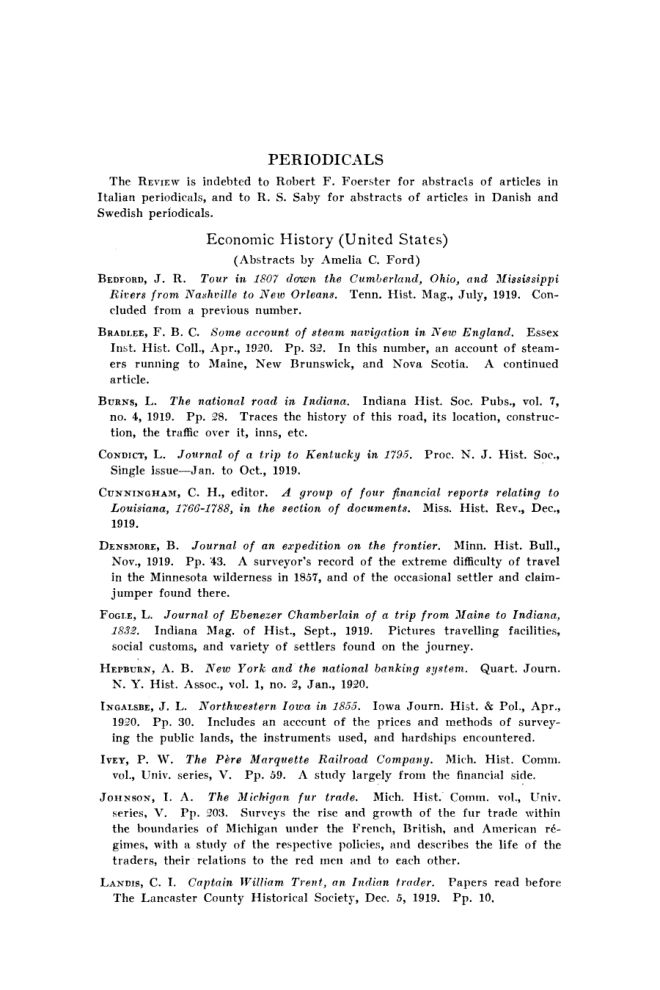

Preço ou bem-estar, o imposto britânico e a lei das ferrovias de 1920
Leitura: 16 min
Fetter pergunta se a economia estuda preços ou bem-estar; Comstock lê a reforma do imposto de renda britânico; Rich explica a lei ferroviária de 1920; Haney, Howard e Farnam tratam de comércio, custos e tributos.


Adam Smith era professor de filosofia; Malthus, pregador; J. B. Say, empregado de seguradora e depois fabricante de algodão; Ricardo, corretor de valores; Senior, advogado; Torrens, soldado; James Mill, funcionário do governo. Frank A. Fetter, da Princeton University, lembra numa nota de rodapé que nenhum deles recebeu formação sistemática em economia: naquele tempo, era economista quem assim se dissesse. A observação fecha o primeiro de dois artigos com que Fetter abre a American Economic Review de setembro de 1920 e que tratam da pergunta mais antiga da disciplina: qual deve ser o seu tema central.
Os demais artigos são de economia aplicada. Alzada Comstock, do Mount Holyoke College, examina o relatório da comissão real britânica sobre o imposto de renda; Edgar J. Rich descreve a lei ferroviária americana de 1920, que encerrou o controle federal das ferrovias criado na guerra; Lewis H. Haney, de Washington, pergunta se a integração das etapas de comercialização de alimentos traz economia ao público; Stanley E. Howard, também de Princeton, discute se o retorno normal sobre o capital deve entrar no custo de fabricação; e uma comunicação registra as divergências de H. W. Farnam com o relatório da comissão de coordenação tributária da associação. Seguem resenhas, listas de livros novos, documentos, periódicos, a décima sétima lista de teses de doutorado em andamento e as notas.
A economia estuda preços ou bem-estar?
Frank A. Fetter (Princeton University) · “Price Economics Versus Welfare Economics” · pp. 467–487
Fetter parte de uma divisão que, segundo ele, existe desde os começos da economia política. Numa concepção, a disciplina estuda preços, lucros e comércio; na outra, as relações entre a riqueza e o bem-estar humano. As duas teriam sido confundidas com frequência, inclusive por autores que tentaram adotar só uma delas, e a confusão ainda atravessaria a economia contemporânea. Neste primeiro artigo, ele acompanha a formação da concepção comercial, de Adam Smith até John Stuart Mill, e a oposição que ela despertou, limitando-se quase só a autores ingleses, porque foi na Inglaterra que o movimento se mostrou mais nítido.
Smith aparece, na maior parte do tempo, como economista do bem-estar: ao defender o laissez-faire, pensava nos resultados para o povo todo e mostrou que o preço em moeda não mede a riqueza nacional. Mas deixou ideias, como a atenção ao valor de troca, que favoreceram a leitura comercial de seus sucessores. Malthus, pelo tema da população, também é classificado como economista do bem-estar. A virada vem com Ricardo, cuja obra principal saiu em 1817 e que Fetter descreve como o mais habituado às ideias do mundo dos negócios entre os economistas da linha ortodoxa.
As seis oposições são os reformadores das leis fabris; o protesto ético de Carlyle e Ruskin; os socialistas cristãos, organizados em abril de 1848; os sindicatos, a quem a doutrina do fundo de salários negava o poder de elevar os salários em geral; os escritores socialistas, cuja crítica Fetter liga diretamente às premissas de Ricardo; e a revisão feita pelos próprios economistas liberais. O tratado de Mill, de 1848, deu às doutrinas aparência de unidade, mas, para Fetter, juntava elementos em conflito: a teoria ricardiana aprendida na juventude com o pai e projetos de reforma social inspirados nos utopistas franceses.
O artigo termina com um anúncio. Há quem proponha que o preço seja o centro do interesse econômico e que as escolas divergentes caminhem nessa direção; no artigo seguinte, Fetter examinará essa afirmação e perguntará se o preço pode ser o ideal e o centro do estudo econômico.
O que a comissão real propôs para o imposto de renda britânico?
Alzada Comstock (Mount Holyoke College) · “British Income Tax Reform” · pp. 488–506
A Royal Commission on the Income Tax, a primeira desde 1861 a examinar o tributo por inteiro, foi nomeada em abril de 1919 e publicou o relatório em março de 1920, depois de 50 sessões e 187 testemunhas. Comstock resume primeiro a história do imposto: criado por Pitt em 1798 para a guerra com a França, revogado em 1802, retomado em 1803 com as cinco cédulas que ainda o organizam, abandonado em 1816 e restaurado por Peel em 1842, à alíquota de 7 pence por libra, cerca de 3%. A diferenciação entre rendas do trabalho e do capital veio em 1907; a graduação por meio de um sobreimposto, pouco depois.
As recomendações, diz a autora, são moderadas e deixam intacta a natureza do imposto. A mais comentada eleva o limite de isenção de £ 130 para £ 150 no caso dos solteiros e para £ 250 no dos casados sem filhos. O limite fora reduzido de £ 160 para £ 130 em 1915, sob forte oposição, sobretudo dos mineiros do sul do País de Gales, que chegaram a aprovar em votação uma greve contra o imposto sobre salários de até £ 250 por ano. A comissão propõe ainda reduzir a diferenciação contra as rendas de investimento, abatendo um décimo da renda do trabalho, e simplificar a graduação: metade da taxa padrão até £ 225 de renda tributável e a taxa cheia acima disso.
“Nenhum imposto pode ser administrado com êxito se contraria o senso geral de justiça.” (“no tax can be successfully administered that is contrary to the general sense of justice”)
A comissão manteve a tributação na fonte, recusou as fórmulas matemáticas de progressividade sugeridas por testemunhas como Edgeworth e não propôs mudança na dupla tributação entre o Reino Unido e países estrangeiros. Recomendou tributar a parte das sobras das cooperativas não devolvida aos associados e penas maiores contra a evasão. Comstock aponta argumentos não levados até o fim e, sobretudo, a falta de uma avaliação da situação financeira do país; o orçamento de 19 de abril de 1920, observa, já restaurava em nível alto o imposto sobre lucros extraordinários.
Como a lei de 1920 pretendia refazer o crédito das ferrovias?
Edgar J. Rich · “The Transportation Act of 1920” · pp. 507–527
Para Edgar J. Rich, a lei de transportes de 1920 é a primeira legislação ferroviária construtiva do Congresso desde as leis de concessão de terras de 1863 e 1866. A lei de 1887 fora corretiva; a partir de cerca de 1910, o problema passou a ser outro: as ferrovias não prestavam serviço adequado e, com custos em alta, dependiam de autorização da Interstate Commerce Commission para aumentar tarifas. A lei combinou o projeto Esch, da Câmara, com o projeto Cummins, do Senado, e a maior parte de suas regras entrou em vigor em 1º de março de 1920, data do fim do controle federal.
No trabalho, a lei não proíbe greves. Cria juntas de ajuste para queixas, regras e condições de trabalho e uma Railroad Labor Board de nove membros, três indicados pelos empregados, três pelas ferrovias e três representantes do público, cujas decisões exigem cinco votos, um deles do público. Não há sanção penal: a força das decisões está na publicidade e na opinião pública.
O centro da lei, segundo Rich, é o problema das ferrovias fortes e fracas. Em linhas concorrentes, as tarifas têm de ser iguais; nos três anos anteriores à guerra, a Burlington ganhou em média mais de 25% sobre o capital acionário, e duas concorrentes, cerca de 1% ou 2%. Tarifas suficientes para as fracas dariam às fortes receita muito acima do necessário. A solução, que Rich credita ao senador Albert B. Cummins, é a recaptura: a metade do excedente que vai ao governo forma um fundo rotativo da comissão, que empresta às ferrovias ou lhes arrenda equipamento. A consolidação compulsória em 20 a 35 sistemas, proposta pelo Senado, caiu na conferência; ficou a voluntária.
A comissão ganhou ainda jurisdição exclusiva sobre a emissão de títulos, poder sobre tarifas intraestaduais que discriminem o comércio interestadual, sobre extensões e abandonos de linhas, sobre a divisão das tarifas conjuntas e sobre tarifas mínimas, além de amplos poderes sobre o serviço de vagões. Rich conclui que a lei pode não resolver todo o problema das ferrovias fortes e fracas, mas é um grande passo nessa direção.
A integração da comercialização barateia os alimentos?
Lewis H. Haney (Washington, D. C.) · “Integration in Marketing” · pp. 528–545
Haney descreve um canal antigo, do fabricante ao atacadista e ao varejista, cortado por cadeias de lojas, centrais de compra de varejistas, venda direta dos fabricantes e casas de venda por correspondência. Por integração entende a combinação de etapas da comercialização entre si ou com a fabricação. Limita-se aos alimentos, em que o atacadista de mercearia é o agente principal, e separa as forças econômicas dos métodos desleais ou antieconômicos que as reforçam.
Entre as forças econômicas, lista oito: compradores muito grandes, fabricação concentrada, publicidade pesada, multiplicação de especialidades de marca, alto valor por unidade, necessidade de serviço ao consumidor, linhas de produtos inter-relacionados e economias de contabilidade, crédito e vendas. Algumas são boas, outras perigosas, outras indiferentes. Os métodos desleais são a publicidade excessiva, o desconto discriminatório por quantidade, os vendedores de especialidades com embarques diretos, a venda forçada da linha completa, a garantia do fabricante contra queda de preço, a manutenção do preço de revenda e os produtos vendidos sem margem para atrair clientes. Todos se resumem, para Haney, em discriminação.
“Se todos conseguem um ‘preço especial’, ninguém tem vantagem em consegui-lo.” (“If every one gets an ‘inside price,’ no one has an advantage in getting it.”)
Nos casos concretos, os grandes frigoríficos, ao distribuir produtos de mercearia, duplicavam passo a passo a cadeia regular, com filiais no lugar dos atacadistas. As casas de venda por correspondência têm despesas de cerca de 22% das vendas, próximas da soma das despesas do atacadista e do varejista de mercearia, 6,5% mais 16%. Mais de 90% do volume de alimentos, estima Haney, passa pelo canal regular.
O argumento central é que a comercialização de mercearia não está sujeita à lei dos rendimentos crescentes. O capital fixo é pequeno e varia com o volume; o vagão completo é a unidade de compra, e o pequeno atacadista que compra um vagão paga o mesmo que o grande que compra dez; a administração é o fator dominante. Daí a conclusão: não há tendência normal à comercialização em grande escala, e os casos existentes no atacado de mercearia não se apoiam em eficiência econômica.
O retorno normal do capital é custo de fabricação?
Stanley E. Howard (Princeton University) · “Interest, Rent, and Normal Return on Capital Investment in their Relation to Manufacturing Costs” · pp. 546–563
A pergunta, diz Howard, ocupa contadores e economistas, e o American Institute of Accountants nomeou uma comissão especial para examiná-la: é correto lançar como custo de fabricação o retorno normal sobre o capital investido? Ele separa três coisas: juros, pagamentos contratuais por dinheiro emprestado; aluguel, pagamentos contratuais por bens duráveis emprestados; e o retorno não contratual esperado, igual ao de um investimento passivo, sem risco.
O exemplo usa três empresas idênticas na técnica e no mercado, com vendas de US$ 150 mil e custos de fabricação de US$ 110 mil. A empresa A tem só ações; a B emite US$ 20 mil em títulos a 5%; a C aluga o equipamento por US$ 2 mil ao ano, dos quais US$ 1 mil correspondem à depreciação. Como as condições de produção são iguais, os custos de fabricação têm de ser iguais: juros e aluguel líquido contratuais não são custo de fabricação, e incluí-los prejudica a comparação entre empresas e o próprio debate.
Uma quarta empresa, D, fabrica três produtos, W, Y e Z, com investimento total de US$ 100 mil, dos quais só 20% em ativos fixos. Autores como Nicholson e Rohrbach defendem calcular o custo de juros apenas sobre os ativos fixos. Howard mostra que esse método leva a preços mínimos diferentes dos que resultam de um retorno de 5% sobre todo o capital, e deixa US$ 48 mil aplicados abaixo do retorno normal.
Em concorrência, a empresa não fixa preços; decide o que produzir. Por isso Howard prefere, como A. L. Dickinson, comparar depois a margem de cada produto com o capital nele investido. Resume quatro princípios: juros e aluguel contratuais não são, em si, custo de fabricação; lançá-los entre os custos prejudica o debate; qualquer cálculo deve usar todo o capital, e não só o aplicado em ativos fixos; e introduzir o custo de oportunidade nas contas é questão de conveniência, que ele julga, na maioria dos casos, pouco eficiente e cara.
Quem deve tributar renda e heranças, a União ou os estados?
H. W. Farnam · “Coördination in Taxation” · pp. 564–566
A comunicação complementa o relatório da comissão de coordenação tributária da American Economic Association, publicado no suplemento de março de 1920 da revista. Seu presidente, R. R. Bowker, explica que modificações e correções de prova chegaram tarde demais, assim como as notas de divergência de H. W. Farnam, que vêm a seguir. Bowker registra que a regra do estado de Nova York que negava aos não residentes a isenção dada aos residentes foi declarada inconstitucional pela Suprema Corte, no caso da Yale and Towne Manufacturing Company, e substituída pela legislatura de 1920; recomenda o artigo de Harley L. Lutz sobre o avanço do imposto de renda estadual desde 1911; e lembra que a lei federal de heranças não se aplica a espólios de até US$ 50 mil.
Bowker esclarece também que o resumo do relatório não pretendia excluir da tributação normal em tempo de paz o fumo, que rendeu US$ 206.003.091 no ano fiscal 1918–1919, mas as muitas taxas de guerra cuja receita era pequena diante do custo de cobrança ou do incômodo ao consumidor.
Farnam diverge em quatro pontos. Primeiro, a Décima Sexta Emenda não revoga a cláusula constitucional sobre impostos diretos: impede que ela seja usada contra um imposto de renda, mas continua a valer para a capitação e outros impostos diretos; e a leitura de que essa cláusula proibia o imposto de renda federal só surgiu mais de cem anos depois da Constituição e mais de trinta depois do imposto de renda de 1861. Segundo, o resumo devia dar mais destaque aos impostos internos sobre consumo, como os de fumo, remédios patenteados e fósforos, e sobre atividades como espetáculos, transportes e seguros.
Terceiro, os impostos sobre heranças devem caber só aos estados, que controlam as leis de sucessão e os tribunais de inventário, evitando dois impostos cumulativos sobre o mesmo espólio. Quarto, o imposto de renda geral deve ser federal, para evitar a dupla tributação, impedir que contribuintes escapem mudando-se para estados sem imposto e evitar conflitos quando a residência legal e o local de trabalho ficam em estados diferentes.
O que mais há na edição?
As resenhas incluem Social Process, de Charles Horton Cooley, por A. B. Wolfe; An Introduction to the Industrial History of England, de Abbott Payson Usher, por Clive Day; Empire and Commerce in Africa, de Leonard Woolf, por E. S. Furniss; Working Life of Women in the Seventeenth Century, de Alice Clark, por Amy Hewes; International Commerce and Reconstruction, de Elisha M. Friedman, por F. W. Taussig; Labor's Challenge to the Social Order, de John Graham Brooks, por Henry R. Seager; e Mortality Statistics of Insured Wage-Earners and their Families, de Louis I. Dublin, por Robert E. Chaddock, entre outras. A seção de documentos abre com a alta de US$ 63 por acre, ou 33%, no valor das terras agrícolas de Iowa entre março de 1919 e março de 1920. A décima sétima lista de teses em andamento continua a série iniciada em 1904. As notas informam que Ray B. Westerfield, da Yale University, foi eleito secretário-tesoureiro da associação.
Na minha leitura
Na minha leitura, a edição inteira gira em torno do que se mede e com que régua. Fetter pergunta se o preço em moeda basta como medida do resultado econômico; Howard pergunta se um custo que não foi pago, o retorno normal do capital próprio, deve entrar nas contas, e mostra que a resposta muda conforme se mede o capital pelo ativo fixo ou pelo investimento inteiro; Haney separa o lucro de uma empresa da economia obtida pelo público.
Comstock, Farnam e Rich tratam da mesma questão no desenho de instituições. Um limite de isenção, a escolha entre tributar na fonte ou por declaração, a divisão de tributos entre União e estados e o retorno fixado por grupo de ferrovias são formas de decidir quem carrega um custo comum. Nos três casos, a regra que parece técnica define a repartição.
Glossário
- Economia do bem-estar
- na acepção de Fetter, a que estuda a relação entre riqueza e bem-estar humano, e não só preços e lucros.
- Laissez-faire
- doutrina da não intervenção do Estado na atividade econômica.
- Fundo de salários
- doutrina clássica segundo a qual os salários são pagos de um estoque prévio de capital dos empregadores.
- Sobreimposto (supertax)
- imposto adicional e graduado sobre as rendas acima de certo limite, cobrado além da taxa padrão.
- Diferenciação
- tratamento mais leve da renda do trabalho em relação à renda de investimentos.
- Tributação na fonte
- cobrança do imposto pelo pagador da renda, antes que ela chegue ao contribuinte.
- Recaptura
- na lei de 1920, entrega ao governo de metade do lucro de uma ferrovia acima de 6% sobre o valor de sua propriedade.
- Tarifa conjunta
- tarifa única para um transporte feito por mais de uma ferrovia, depois dividida entre elas.
- Integração na comercialização
- combinação de etapas da distribuição entre si ou com a fabricação, como fabricante que vende direto ao varejo.
- Custo de oportunidade
- o que o capital renderia em aplicação passiva, lançado como custo mesmo sem pagamento efetivo.
Artigos (6)
- Price Economics Versus Welfare Economics — Frank A. Fetter (Princeton University) (pp. 467–487) · resenha acima · comentário completo · JSTOR
- British Income Tax Reform — Alzada Comstock (Mount Holyoke College) (pp. 488–506) · resenha acima · JSTOR
- The Transportation Act of 1920 — Edgar J. Rich (pp. 507–527) · resenha acima · comentário completo · JSTOR
- Integration in Marketing — Lewis H. Haney (Washington, D. C.) (pp. 528–545) · resenha acima · JSTOR
- Interest, Rent, and Normal Return on Capital Investment in their Relation to Manufacturing Costs — Stanley E. Howard (Princeton University) (pp. 546–563) · resenha acima · JSTOR
- Coördination in Taxation — H. W. Farnam; nota de R. R. Bowker (pp. 564–566) · resenha acima · JSTOR
Resenhas (14)
- Charles Horton Cooley, Social Process — A. B. Wolfe (pp. 567–571). Resenha de A. B. Wolfe. JSTOR
- Abbott Payson Usher, An Introduction to the Industrial History of England — Clive Day (pp. 572–575). Resenha de Clive Day. JSTOR
- Leonard Woolf, Empire and Commerce in Africa: A Study in Economic Imperialism — E. S. Furniss (pp. 575–577). Resenha de E. S. Furniss. JSTOR
- Alice Clark, Working Life of Women in the Seventeenth Century — Amy Hewes (pp. 577–581). Resenha de Amy Hewes. JSTOR
- Pierre-Edm. Hugues, Un Impôt Extraordinaire sur le Revenu sous la Révolution — N. S. B. Gras (pp. 581–583). Resenha de N. S. B. Gras. JSTOR
- Howard Douglas Dozier, A History of the Atlantic Coast Line Railroad — Isaac Lippincott (pp. 593–595). Resenha de Isaac Lippincott. JSTOR
- Elisha M. Friedman, International Commerce and Reconstruction — F. W. Taussig (pp. 596–597). Resenha de F. W. Taussig. JSTOR
- John Graham Brooks, Labor's Challenge to the Social Order — Henry R. Seager (pp. 602–605). Resenha de Henry R. Seager. JSTOR
- Don D. Lescohier, The Labor Market — George M. Janes (pp. 605–607). Resenha de George M. Janes. JSTOR
- Boris Brasol, Socialism versus Civilization — J. E. LeRossignol (pp. 624–626). Resenha de J. E. LeRossignol. JSTOR
- John William Lloyd, Cooperative and Other Organized Methods of Marketing California Horticultural Products — William R. Camp (pp. 626–628). Resenha de William R. Camp. JSTOR
- Herbert E. Gaston, The Nonpartisan League — George M. Janes (pp. 628–632). Resenha de George M. Janes. JSTOR
- Louis I. Dublin, Mortality Statistics of Insured Wage-Earners and their Families — Robert E. Chaddock (pp. 635–639). Resenha de Robert E. Chaddock. JSTOR
- Slavko Secerov, Economic Phenomena before and after War — A. B. Wolfe (pp. 640–642). Resenha de A. B. Wolfe. JSTOR
Novos livros (16)
- New Books (pp. 571–572). Lista de livros recentes da seção de obras gerais, teoria e sua história. JSTOR
- New Books (pp. 583–588). Lista de livros recentes da seção de história econômica e geografia. JSTOR
- New Books (pp. 588–592). Lista de livros recentes da seção de agricultura, mineração, florestas e pesca. JSTOR
- New Books (pp. 592–593). Lista de livros recentes da seção de indústrias manufatureiras. JSTOR
- New Books (pp. 595–596). Lista de livros recentes da seção de transportes e comunicações. JSTOR
- New Books (pp. 598–599). Lista de livros recentes da seção de comércio e crises comerciais. JSTOR
- New Books (pp. 599–601). Lista de livros recentes da seção de contabilidade, métodos comerciais e bolsas. JSTOR
- New Books (pp. 601–602). Lista de livros recentes da seção de capital e organização capitalista. JSTOR
- New Books (pp. 607–611). Lista de livros recentes da seção de trabalho e organizações trabalhistas. JSTOR
- New Books (pp. 611–615). Lista de livros recentes da seção de moeda, preços, crédito e bancos. JSTOR
- New Books (pp. 615–618). Lista de livros recentes da seção de finanças públicas, tributação e tarifa. JSTOR
- New Books (pp. 618). Lista de livros recentes da seção de população e migração. JSTOR
- New Books (pp. 618–622). Lista de livros recentes da seção de problemas sociais e reformas. JSTOR
- New Books (pp. 622–624). Lista de livros recentes da seção de seguros e pensões. JSTOR
- New Books (pp. 632–635). Lista de livros recentes da seção de socialismo e empresas cooperativas. JSTOR
- New Books (pp. 642–643). Lista de livros recentes da seção de estatística e seus métodos. JSTOR
Documentos, periódicos e notas (4)
- Documents, Reports, and Legislation — redação e colaboradores (pp. 644–666). Resumos de documentos oficiais, a começar pelo estudo da alta do valor das terras agrícolas de Iowa entre 1919 e 1920. JSTOR
- Periodicals — redação e colaboradores (pp. 667–691). Resumos de artigos de periódicos americanos e estrangeiros, por área. JSTOR
- Seventeenth List of Doctoral Dissertations in Political Economy in Progress in American Universities and Colleges — redação (pp. 692–706). Décima sétima lista anual de teses de doutorado em economia em andamento nas universidades americanas, organizada por área. JSTOR
- Notes — redação (pp. 707–718). Notas da associação e do meio acadêmico, a começar pelo novo endereço da associação e pela eleição de Ray B. Westerfield como secretário-tesoureiro. JSTOR
Fontes
- Price Economics Versus Welfare Economics (pp. 467–487). JSTOR · Internet Archive (PDF)
- British Income Tax Reform (pp. 488–506). JSTOR · Internet Archive (PDF)
- The Transportation Act of 1920 (pp. 507–527). JSTOR · Internet Archive (PDF)
- Integration in Marketing (pp. 528–545). JSTOR · Internet Archive (PDF)
- Interest, Rent, and Normal Return on Capital Investment in their Relation to Manufacturing Costs (pp. 546–563). JSTOR · Internet Archive (PDF)
- Coördination in Taxation (pp. 564–566). JSTOR · Internet Archive (PDF)
- [untitled] The American Economic Review, (1920-09-01), pages 567-571 (pp. 567–571). JSTOR · Internet Archive (PDF)
- New Books (pp. 571–572). JSTOR · Internet Archive (PDF)
- [untitled] The American Economic Review, (1920-09-01), pages 572-575 (pp. 572–575). JSTOR · Internet Archive (PDF)
- [untitled] The American Economic Review, (1920-09-01), pages 575-577 (pp. 575–577). JSTOR · Internet Archive (PDF)
- [untitled] The American Economic Review, (1920-09-01), pages 577-581 (pp. 577–581). JSTOR · Internet Archive (PDF)
- [untitled] The American Economic Review, (1920-09-01), pages 581-583 (pp. 581–583). JSTOR · Internet Archive (PDF)
- New Books (pp. 583–588). JSTOR · Internet Archive (PDF)
- New Books (pp. 588–592). JSTOR · Internet Archive (PDF)
- New Books (pp. 592–593). JSTOR · Internet Archive (PDF)
- [untitled] The American Economic Review, (1920-09-01), pages 593-595 (pp. 593–595). JSTOR · Internet Archive (PDF)
- New Books (pp. 595–596). JSTOR · Internet Archive (PDF)
- [untitled] The American Economic Review, (1920-09-01), pages 596-597 (pp. 596–597). JSTOR · Internet Archive (PDF)
- New Books (pp. 598–599). JSTOR · Internet Archive (PDF)
- New Books (pp. 599–601). JSTOR · Internet Archive (PDF)
- New Books (pp. 601–602). JSTOR · Internet Archive (PDF)
- [untitled] The American Economic Review, (1920-09-01), pages 602-605 (pp. 602–605). JSTOR · Internet Archive (PDF)
- [untitled] The American Economic Review, (1920-09-01), pages 605-607 (pp. 605–607). JSTOR · Internet Archive (PDF)
- New Books (pp. 607–611). JSTOR · Internet Archive (PDF)
- New Books (pp. 611–615). JSTOR · Internet Archive (PDF)
- New Books (pp. 615–618). JSTOR · Internet Archive (PDF)
- New Books (pp. 618). JSTOR · Internet Archive (PDF)
- New Books (pp. 618–622). JSTOR · Internet Archive (PDF)
- New Books (pp. 622–624). JSTOR · Internet Archive (PDF)
- [untitled] The American Economic Review, (1920-09-01), pages 624-626 (pp. 624–626). JSTOR · Internet Archive (PDF)
- [untitled] The American Economic Review, (1920-09-01), pages 626-628 (pp. 626–628). JSTOR · Internet Archive (PDF)
- [untitled] The American Economic Review, (1920-09-01), pages 628-632 (pp. 628–632). JSTOR · Internet Archive (PDF)
- New Books (pp. 632–635). JSTOR · Internet Archive (PDF)
- [untitled] The American Economic Review, (1920-09-01), pages 635-639 (pp. 635–639). JSTOR · Internet Archive (PDF)
- [untitled] The American Economic Review, (1920-09-01), pages 640-642 (pp. 640–642). JSTOR · Internet Archive (PDF)
- New Books (pp. 642–643). JSTOR · Internet Archive (PDF)
- Documents, Reports, and Legislation (pp. 644–666). JSTOR · Internet Archive (PDF)
- Periodicals (pp. 667–691). JSTOR · Internet Archive (PDF)
- Seventeenth List of Doctoral Dissertations in Political Economy in Progress in American Universities and Colleges (pp. 692–706). JSTOR · Internet Archive (PDF)
- Notes (pp. 707–718). JSTOR · Internet Archive (PDF)
- Sumário da edição no JSTOR: The American Economic Review, vol. 10, nº 3.
Documento em domínio público (EUA, publicado antes de 1931), via JSTOR Early Journal Content e Internet Archive. Resumo e comentário do autor deste site, sem afiliação com a American Economic Association. Encontrou um erro? Escreva: a correção é publicada no próprio texto, com data.
← Nº 164 · A frota que a guerra deu aos Estados Unidos e a conta de Keynes Nº 166 · Lucros extraordinários: o que a Grã-Bretanha ensinou, 1915–1920 →